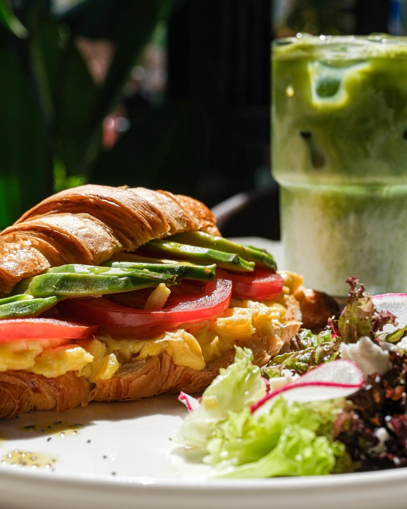
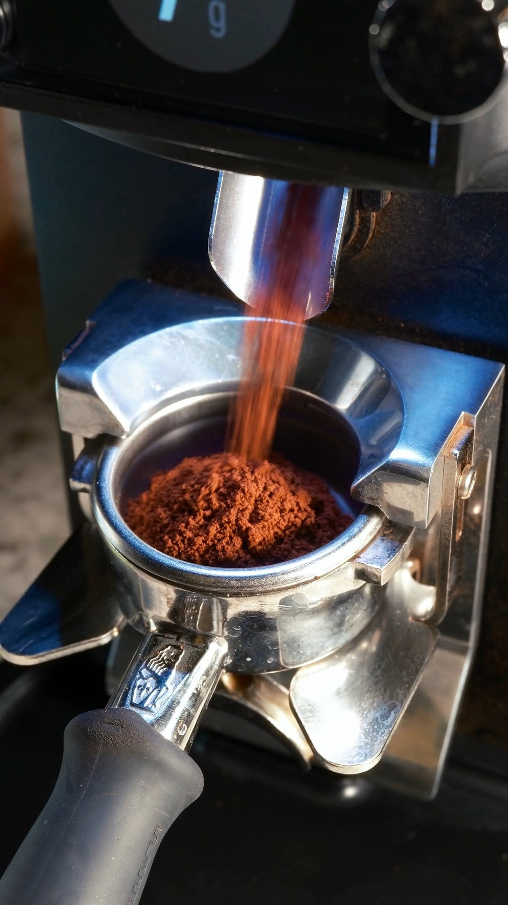
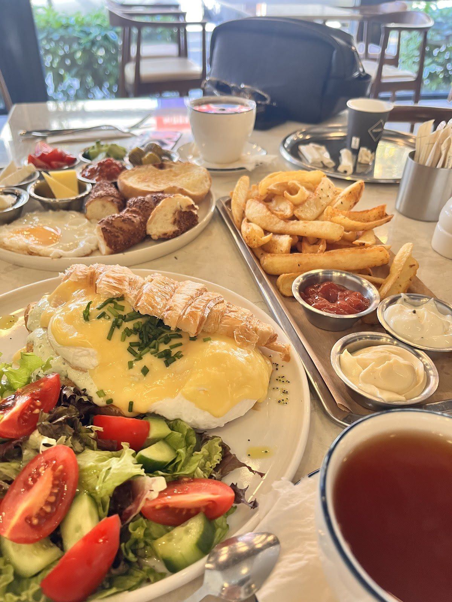
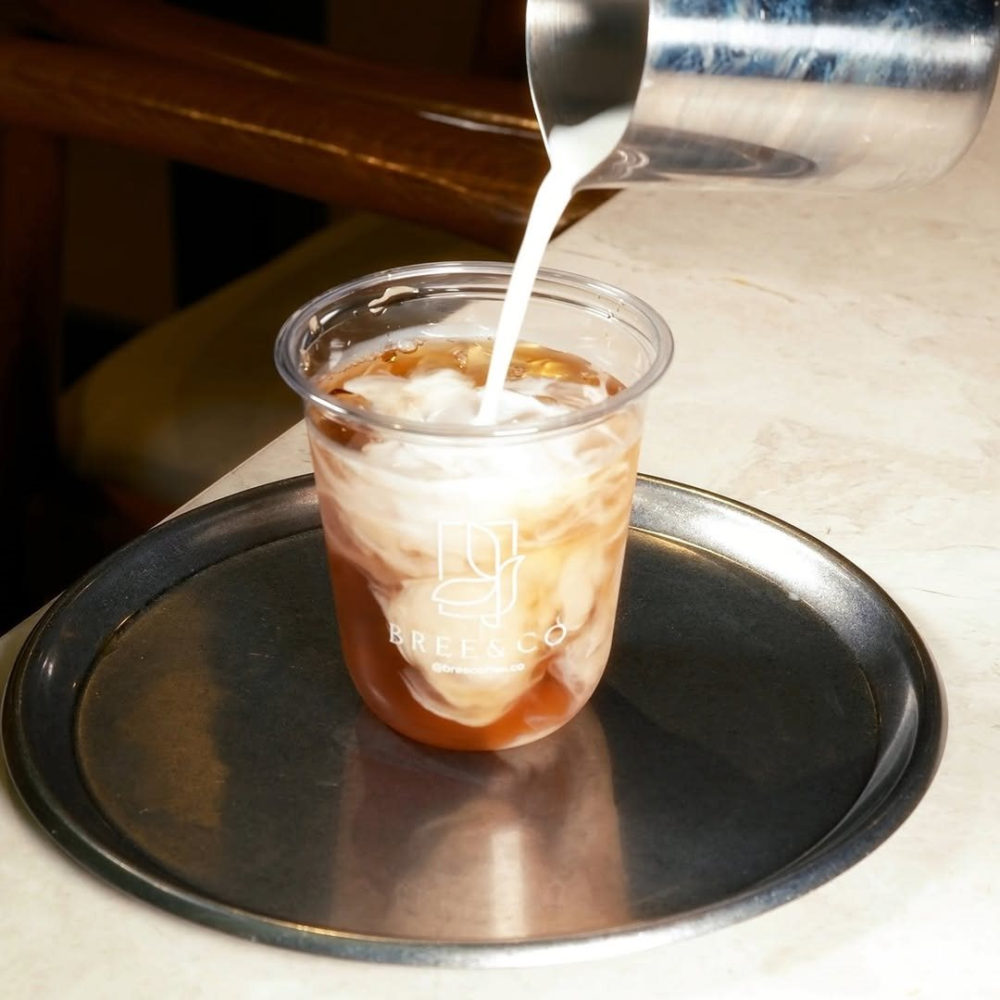

Avokadolu kruvasan
Kruvasan arasında avokado, yumurta ve domates.
Beylikdüzü, Kameroğlu Metrohome
Kahvaltıyla başlayan gün,
kahveyle uzayan sohbet.
Bree & Co’da buluşalım.



Kruvasanın arasına avokado ve yumurta, kahvaltı masasına güzel bir sohbet. Güne birlikte başlayalım.
Menü hakkında Instagram’dan yazınGünün ortasında kısa bir ara ya da akşama uzayan bir buluşma. Kahvenizi seçin, biraz daha kalın.
Bree & Co’dan son paylaşımlar
Metrohome’da günün farklı anlarına eşlik eden bir buluşma. Kahvaltıda, öğle molasında veya kahve için.
Google yorumları
Google yorumu ★★★★★
“Yakındaki kafeler arasında en sevdiğim kahve onlarınki. Sadece acı değil, gerçekten güzel bir kahve aroması var.”Miya H.Yorumun tamamı
Google yorumu ★★★★★
“Kahvaltı tabağı menüdeki fotoğrafta göründüğünden daha dolu ve daha güzel geldi.”Sevda Ç.Yorumun tamamı
Google yorumu ★★★★★
“Çırpılmış yumurta ve avokadolu kruvasan harikaydı. Üstündeki soğan turşusu çok iyi bir tat katmış.”Bernis A.Yorumun tamamı
Google yorumlarından kısa alıntılar. Puan ve yorum sayısı 2 Kasım 2026 tarihinde kontrol edilmiştir.
Her gün 09.00 – 01.00
Özel günlerdeki değişiklikler ve güncel menü için işletmeden bilgi alabilirsiniz.